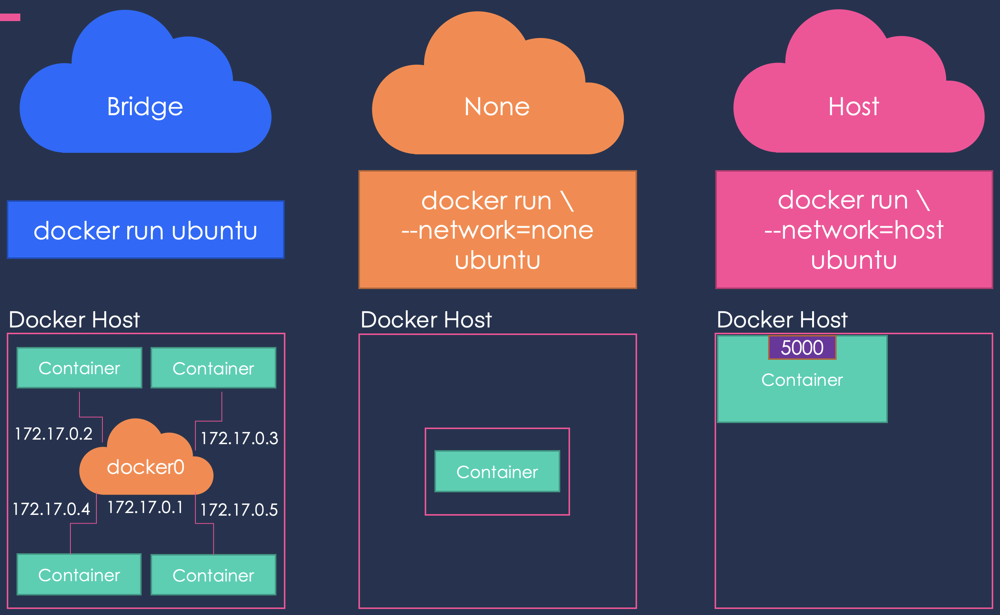

When you install Docker it creates three networks automatically:
Bridge: default network the container get attached to.
$ docker run ubuntu
none:
$ docker run ubuntu --network=none
host
$ docker run ubuntu --network=host

This is a private internal network created by Docker on the host. All containers can access each other using their internal IP (usually subnets of 172.17.0.3).
To access from outside you have to map a port of the container to a port of the host.
Another way to configure the network is to associate the container to the host's network, removing all kind of network isolation between the Docker host and the Docker container.
This way when you run a server on port 5000 it would automatically accessible from the host on the port 5000 without needing to map it to a host's port.
This prevents you from using the same ports for different applications.
The containers are not attached to any network and are, therefore, isolated from any other containers so they do not have any access to the external network or other containers.
Because with the default internal network, the containers can access each other, it is sometimes desirable to create new internal networks:
$ docker network create --drive bridge --subnet 172.18.0.0/16 <network_name>
To list the created networks:
$ docker network ls
In order to see the network configuration use inspect and head to the Networks section:
$ docker inspect ( container_name | container_id )
.
.
.
"MacAddress": "aa:bb:cc:dd:ee:ff",
"Networks": {
"bridge": {
"IPAMConfig": null,
"Links": null,
"Aliases": null,
"NetworkID": "24af0d...",
"EndpointID": "3449a29...",
"Gateway": "172.17.0.1",
"IPAddress": "172.17.0.3",
"IPPrefixLen": 16,
"IPv6Gateway": "",
"GlobalIPv6Address": "",
"GlobalIPv6PrefixLen": 0,
"MacAddress": "02:42:ac:11:00:03",
"DriverOpts": null
}
}
.
.
.
When containers in the same subnet may want to access each other, for that you could hard code the internal IP assigned to the containers. However this is not advisable, as this IP may change when the container is started in another occasion in the future.
Because of that all containers in a Docker host can resolve each other using their names. This is possible has a built-in DNS server for this purpose that runs at 172.0.0.11.